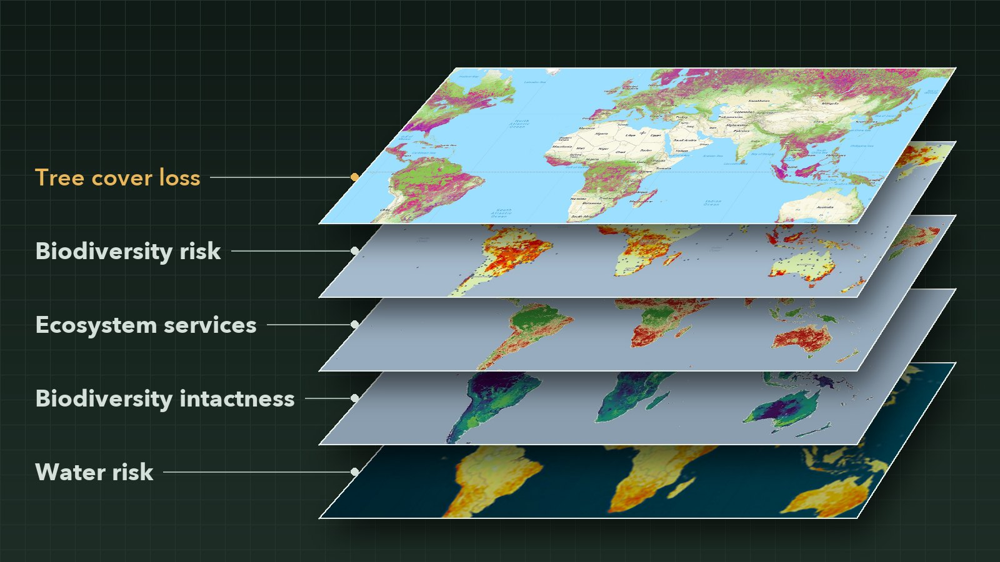

01.1
Localizações precisas
Revisamos seus pontos de localização, relatórios, endereços e qualquer outra informação de localização e os convertemos em coordenadas geográficas precisas.
Pilar 01 · Risco ESG e conformidade
Regulamentações como o Regulamento da UE sobre Desmatamento (EUDR) e a Diretiva de Relatórios de Sustentabilidade Corporativa (CSRD) exigem que as empresas saibam de onde vêm seus produtos e o que está acontecendo nessas terras. Transformamos dados de localização em evidências de risco que suas equipes de sustentabilidade, compras e compliance podem usar.

Contexto
O termo ESG surgiu no mundo dos investimentos para designar os fatores ambientais, sociais e de governança que podem afetar materialmente um ativo ou um negócio. Hoje abrange questões mais amplas de sustentabilidade e é usado em todo o setor privado para avaliar como uma empresa afeta as pessoas e o meio ambiente.
Muitos desses riscos se manifestam localmente e variam muito conforme a localização de uma unidade, fazenda ou fornecedor. Reduzir o consumo de água doce é mais importante onde o estresse hídrico já é alto. A compra de commodities está mais exposta ao risco de desmatamento onde as fronteiras florestais ainda avançam. Essa é a ideia por trás do mapeamento ESG: modelar o contexto geográfico de uma operação como camadas espaciais de dados ambientais, sociais, econômicos, regulatórios e políticos e, em seguida, sobrepor as localizações reais ou planejadas para identificar quais fatores ESG devem ser priorizados.1
O mapeamento ESG não mede o desempenho de uma empresa. Ele olha para o contexto: as condições preexistentes que um negócio precisa levar em conta. O risco tem dois sentidos: o risco de entrada, do contexto local para a operação, como escassez hídrica, enchentes ou conflitos fundiários, e o risco de saída, da operação para as comunidades e os ecossistemas.1,2
Se você quer usar o geoprocessamento para identificar os riscos na sua cadeia de suprimentos, fale conosco.
O que oferecemos
Avaliações de risco de fornecimento sob medida, que combinam as localizações das suas unidades e fornecedores com os melhores dados espaciais disponíveis, subsidiando seus relatórios de sustentabilidade e viabilizando a conformidade com a EUDR, a CSRD e outras regulamentações.
Revisamos seus pontos de localização, relatórios, endereços e qualquer outra informação de localização e os convertemos em coordenadas geográficas precisas.
Revisão independente de protocolos existentes de avaliação de risco: escolha de indicadores, qualidade dos dados, ponderação e agregação, com recomendações claras para melhorar a forma como o risco é detectado e comunicado.
Usamos todas as informações disponíveis para calcular os riscos físicos (água, clima, biodiversidade), sociais e regulatórios ao longo da sua cadeia de suprimentos.
Avaliação de risco e evidências de geolocalização para as commodities abrangidas pelo Regulamento da UE sobre Desmatamento, incluindo a verificação por satélite de produção livre de desmatamento.
Experimente a verificação gratuitaDados baseados em localização para os temas ambientais das ESRS, como clima, água e biodiversidade, para apoiar a avaliação de materialidade.
Planos passo a passo para levar os modelos de risco da análise para o dia a dia dos processos de compras, compliance e investimento.
Dashboards interativos que mostram no mapa a pontuação de risco de fornecedores e unidades, para que as equipes de compras e compliance possam filtrar, comparar e acompanhar o risco ao longo do tempo.
Experiência
Nossa equipe já realizou trabalhos de análise de risco ESG para empresas, instituições financeiras e padrões de sustentabilidade. Isso inclui:
Referências
Conte-nos brevemente sobre o seu projeto. Normalmente respondemos em até um dia útil.